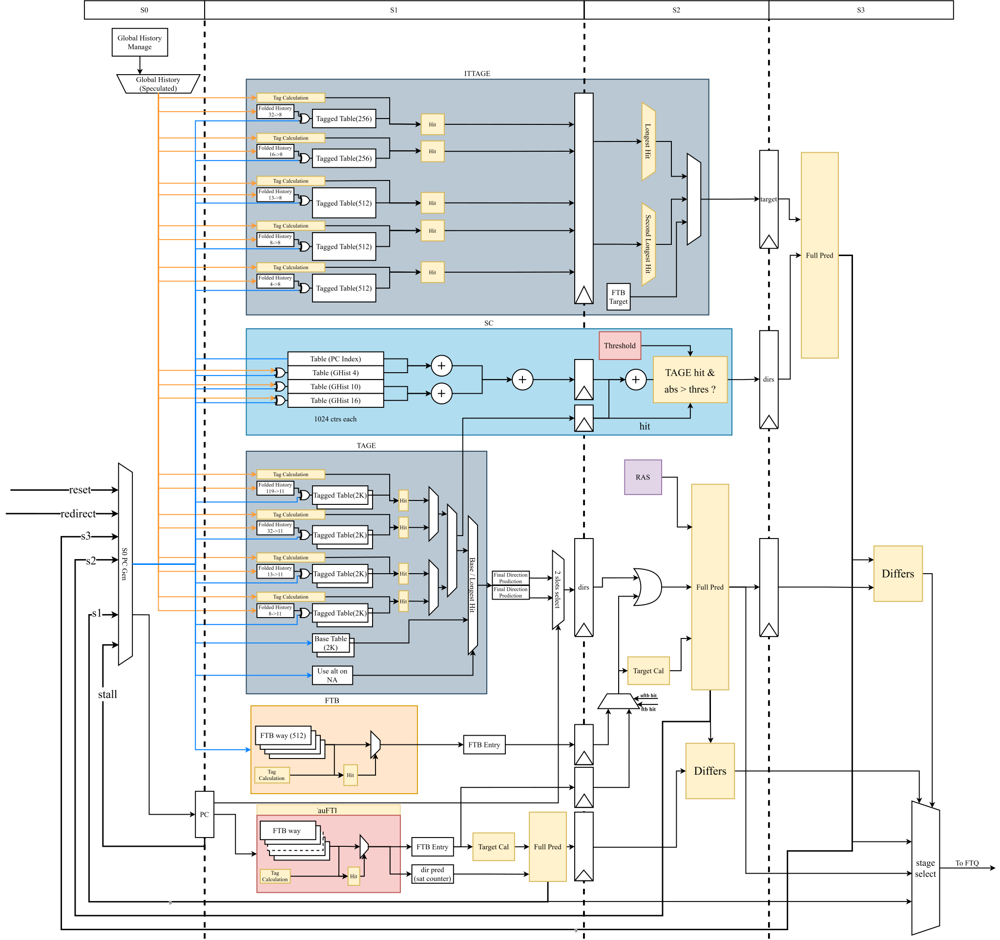
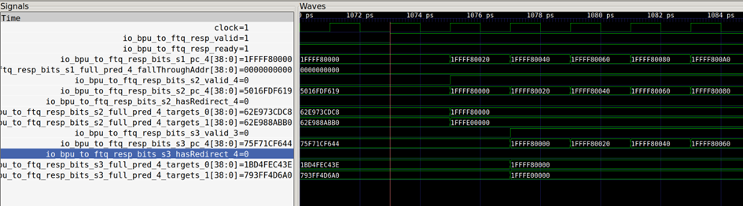
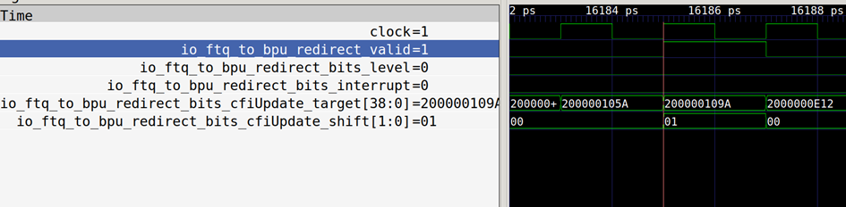
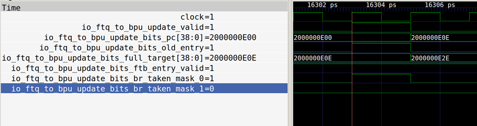

昆明湖 BPU モジュール ドキュメント
用語説明
表 1.1 用語説明
| 略語 | 正式名称 | 説明 |
|---|---|---|
| BPU | Branch Prediction Unit | 分岐予測ユニット |
| IFU | Instruction Fetch Unit | 命令フェッチユニット |
| FTQ | Fetch Target Queue | フェッチターゲットキュー |
| uFTB | Micro Fetch Target Buffer | マイクロフェッチターゲットバッファ |
| FTB | Fetch Target Buffer | フェッチターゲットバッファ |
| TAGE | TAgged GEometric length predictor | 条件分岐予測器の一種 |
| SC | statistical corrector predictor | 統計的な偏りがある場合にTAGEの予測を補正するための条件分岐予測器 |
| ITTAGE | Indirect Target TAgged GEometric length predictor | 間接分岐命令のターゲットアドレスを予測するための分岐予測器 |
| RAS | Return Address Stack | 呼び出し命令に対応するリターン命令のターゲットアドレスを予測するための分岐予測器 |
設計仕様
- 一度に1つの分岐予測ブロックとそれに対応する予測器の付加情報を生成することをサポート
- バブルのない単純な予測をサポート
- 複数の高精度予測器とオーバーライドメカニズムをサポート
- 予測器のトレーニングをサポート
- 分岐履歴情報のメンテナンスと誤予測からの回復をサポート
- トップダウンパフォーマンスイベントの統計をサポート
機能説明
機能概要
BPUモジュールは、モジュール外部のバックエンド実行ユニットおよび後続のパイプラインステージからのリダイレクト信号を受け取ります。アドレスに基づいて複数の予測器を使用し、現在のPC値から始まる位置の予測ブロックと、その予測ブロックを生成する際の各予測器内部のメタ情報を生成し、後続のフェッチターゲットキュー（FTQ）に渡して保存します。予測ブロックは命令フェッチユニット（IFU）で使用され、メタ情報は将来の予測器のトレーニングと回復に使用されます。中でも、BPUモジュールは完全連想uFTBをnext line predictorとして使用し、理想的な条件下で遅延がわずか1サイクルのバブルのない単純な予測結果を生成します。この結果は直接出力としてFTQに渡されます。同時に、この基本的な予測結果はBPUの後続パイプライン内を流れ、より正確な予測結果を提供するために高度な予測コンポーネントで使用されます。後続のパイプラインステージで高度な予測器の予測結果が既存の結果と一致しない場合、高度な予測器の結果が新しい出力として使用され、後続のFTQに保存されている予測ブロックの結果が更新され、s0ステージのPCがリダイレクトされ、新しい結果のパイプラインステージより前のパイプラインステージの誤ったパスの結果がクリアされます。命令の種類によって予測情報も異なります。条件分岐命令のターゲットアドレスはuFTBによって提供され、その方向を予測する必要があります。無条件直接分岐命令のターゲットアドレスはuFTBによって提供され、特別な結果予測は必要ありません。間接分岐命令の分岐方向を予測する必要はありませんが、uFTBが提供する分岐先アドレスの結果は必ずしも正しくないため、予測が必要です。
BPU内の高度な予測器には、FTB、TAGE-SC、ITTAGE、RASが含まれます。FTBは予測ブロックの開始アドレス、終了アドレス、含まれる分岐命令のPCアドレス、タイプ（branchか、jalrか、jalか、callか、returnか）、基本的な方向結果を管理します。TAGE-SCは条件分岐命令の主要な予測器であり、ITTAGEは間接分岐命令を予測するために使用されます。RASはreturnタイプの関接分岐命令の分岐先アドレスを予測します。
予測ユニット内の複数の予測器は、分岐予測履歴を予測条件として使用します。履歴と実際の実行軌跡との一致度を高めるため、分岐予測履歴も予測結果に応じて投機的に更新されます。グローバル分岐履歴はBPUのトップレベルで複数の更新ソースを使用して更新・維持され、TAGE、SC、ITTAGEの予測に必要な長さに応じて維持されます。異なる分岐履歴長の分岐履歴維持アルゴリズムは同じです。具体的には、TAGEが使用する分岐履歴長は8、13、32、119です。ITTAGEが使用する履歴長は4、8、13、16、32です。SCが使用する履歴長は0、4、10、16です。分岐予測履歴はBPUモジュールのトップレベルで一元的に維持され、更新ソースは優先度の低い順に、s0でブロックされ一時保存された分岐履歴、s1の予測結果を利用して更新された分岐履歴、s2の予測結果を利用して更新された分岐履歴、s3の予測結果を利用して更新された分岐履歴、およびBPU外部からのリダイレクトによる分岐履歴です。各分岐履歴の具体的な維持戦略は次のとおりです。
s0でブロックされ一時保存された分岐履歴：いかなる能動的な更新も行わず、常に最新のグローバルフォールディング履歴と一致させます。
s1予測結果で更新される分岐履歴：s1ステージの分岐予測結果を利用し、パイプラインを通じて渡されるs0のグローバルフォールディング履歴上で更新します。具体的には、予測結果を分岐予測スロットの位置に応じてグローバル分岐履歴にシフトインします。0番スロットの場合は直接シフトインし、1番スロットの場合は0（スロット0がtakenでない場合）と現在の予測結果をシフトインします。
s2予測結果で更新される分岐履歴：s2ステージの分岐予測結果を利用し、パイプラインを通じて渡されるs1のグローバルフォールディング履歴上で更新します。更新アルゴリズムはs1と同じです。s2の更新は、s2の予測結果が以前のs1と異なる場合にのみ有効になります。
s3の更新戦略はs1、s2と同じで、更新はs3の結果が以前のs1またはs2と異なる場合にのみ有効になります。
リダイレクトによる分岐履歴の更新は、リダイレクトが発生した場合にのみ行われます。リダイレクト情報内のaddIntoHist信号の状況に応じて、返された分岐履歴を直接、またはリダイレクトに対応する分岐命令の方向結果を追加した後に、BPUのグローバル分岐履歴を更新するために使用します。
より正確な予測結果を保証するために、各分岐予測器は常に最新の実行結果を使用してトレーニングする必要があります。具体的には、更新された予測ブロックと、その予測を行った際の各予測器の内部状態のメタ情報がFTQモジュール内で生成され、BPUユニットに返送されて各予測器が内部状態を更新するために使用されます。
分岐予測は結果の正しさを保証するものではありません。予測結果が実際の状態と一致しない場合、誤った予測を使用して更新された状態の前に状態を回復する必要があります。これには主に分岐履歴の回復と予測ブロック開始アドレスのリダイレクトが含まれます。
分岐予測ブロックとメタ情報の生成
分岐予測ブロックの考え方
分岐予測の目的は、実行フローに存在する分岐命令の分岐方向とターゲットを予測し、実際に現在の命令を実行する前に投機的に後続のフェッチPC範囲情報を生成して、命令の連続的な供給を保証することです。
分岐予測ブロックには、この分岐予測ブロックの有効ビット（BranchPredictionBundle.valid）、開始アドレス、完全な予測結果、FTBエントリ、フォールディングされた分岐履歴、RAS予測器のスタックトップなどの情報が含まれています。このうち、完全な予測結果は最初のパイプラインステージではuFTBから、後続ではFTBなどの高度な予測器から得られます。FTBエントリはuFTBとFTBの読み出し結果から得られます。
完全な予測結果には、分岐命令の分岐方向、ブロック内に記録された分岐命令情報が有効かどうか（slot_valids、つまりその分岐命令が存在するかどうか。1つのvalidが1つのスロットに対応し、1つのスロットが予測ブロック内の1つの分岐命令に対応します。合計2つのスロットがあり、最後のスロットはブロック内の2番目の分岐命令または1つの無条件分岐/間接分岐命令を記録する可能性があります）、分岐命令のターゲット、jalr命令のターゲット、分岐命令のブロック内オフセット、分岐しない場合の命令ブロックの終了アドレス、終了アドレスに誤りがあるかどうか（ブロック開始アドレスが終了アドレスより大きい場合、false hitが存在することを示します）、最後の分岐命令のタイプ、最後の命令がRVIのcall命令であるかどうか、2番目の分岐命令スロットが分岐命令を記録しているか（無条件/間接分岐ではないか）、ヒットしたかどうかなどの情報が記録されています。前述のように、分岐予測ブロック内には最大で2つの分岐命令、または1つの分岐命令+1つの無条件分岐命令が出現します。予測ブロック内に実際に記録された命令数がこの制限を超えた場合、後続のFTQモジュールがそれを分割します。また、分岐予測ブロック内に分岐命令が存在しない場合や、分岐命令数の制限を超えていないが分岐予測ブロックの最大幅（32B）に達した場合も切り捨てられます。
FTBエントリには、エントリが有効かどうか（FTBは直接マッピング方式を採用しており、読み出しアドレスが書き込まれたことがない場合、このフラグは無効です）、最初の分岐命令スロット、末尾の分岐/ジャンプ共用スロット、終了アドレス、命令タイプ、最後の命令がRVI call命令であるかどうか、常に分岐するかどうかなどの情報が記録されています。FTBエントリは完全な予測結果を生成するために使用できます。
分岐予測ブロックの生成
分岐予測ブロックの基本的なPC情報は、最初にモジュール外部から渡されるリセットアドレスによって指定されます。その後、プロセッサの実行中に、通常は予測ブロックの分岐先アドレスに従って投機的に更新されます。誤予測が発生した場合、PC値はリダイレクトチャネルから与えられた値に基づいて更新されます。next lineの完全な予測結果はuFTBモジュールから読み出されます。完全な予測結果のうち、FTBエントリはFTQモジュールが過去のトレーニング結果に基づいて生成し、条件分岐命令の分岐方向はuFTBが生成し、後続でTAGE-SC予測器が更新します。間接分岐命令の分岐先アドレスはuFTBが生成し、後続でITTAGE予測器が更新します。RAS予測器はreturnタイプの間接分岐命令に対してITTAGEの予測結果を上書きします。上書きされた結果は予測器の出力にのみ反映され、結果が上書きされた予測器に即座にフィードバックされて内部状態を更新することはありません。
メタ情報の生成
各予測器は、自身の更新を容易にするために、予測を行った際の予測器の内部状態情報（例えば、その予測を行った際にヒットした予測テーブルの番号、ヒットしたインデックスなど）をメタ情報として、予測結果と共にパイプラインを通じて渡します。
バブルなしの単純予測
uFTBはBPUのnext line predictorとして機能し、プロセッサにバブルのない基本的な予測を提供して、次の投機的PC値を連続的に生成します。
uFTBリクエストの受信
毎回、ステージ1のリクエストが有効になると、渡された予測ブロックの開始PCの16ビット目から1ビット目を切り取ってタグを生成し、このモジュール内の完全連想uFTBに送信してFTBエントリを読み取ります。FTBエントリの記録内容は前述の通りです。uFTB内には、レジスタで構築された32エントリの完全連想構造があります。レジスタで実装されているため、各エントリはそのサイクルで、保存されているデータが有効かどうか、および保存されているタグが渡された情報と一致するかどうかに基づいて、このエントリがヒットしたかどうかの信号と読み出されたFTBエントリデータを生成し、uFTB層に返します。
uFTBデータの読み出しと返却
そのサイクルで、uFTBストレージはヒット信号と読み出しデータを返します。この段階では、返されたヒット信号から最大1つのヒットエントリを選択し、そのヒットエントリを利用して予測結果を生成します。完全な予測結果を生成するアルゴリズムは、後続のFTBモジュールで詳細に説明します。ここでuFTBには、追加のカウンタメカニズムがあります。uFTB内の各エントリの最大2つの分岐命令に2ビット幅のカウンタを追加します。カウンタが1より大きいか、FTBエントリ内のalways_takenが有効な場合（後者のメカニズムはFTBモジュールにも存在します）、予測結果は分岐となります。さらに、このレベルのヒット信号と選択されたヒットウェイ番号は、この予測器のメタ情報として、他の予測器と一緒にs3ステージに入るときに予測器から送出され、最終的な予測結果と共にFTQに保存されます。この予測器は、2、3ステージでは他の追加のアクションはありません。
uFTBデータの更新
その予測ブロックに対応する命令がすべてコミットされると、FTQからBPUに接続されているこのモジュールのupdateチャネルに、FTQモジュールが命令コミット情報に基づいて更新したFTBエントリが含まれます。完全連想uFTBはすべてレジスタでストレージを構築しているため、書き込み操作は並行する読み出し操作に影響を与えません。渡された更新情報は常に更新に使用されます。更新チャネルが有効な場合、そのサイクルで渡された更新PC値を利用してタグを生成し、uFTB内の既存の各エントリと照合して、一致するかどうか、および一致するウェイの信号を生成します。次のサイクルで、既存の一致がある場合は、一致するウェイの書き込み信号をアサートします。そうでない場合は、疑似LRU置換アルゴリズムを利用して置換するウェイを選択し、対応するウェイの書き込み信号をアサートします。書き込むデータは更新されたFTBエントリです。
各分岐命令のカウンタのメンテナンスも、updateチャネルがアサートされたときに同時に更新されます。updateチャネルがアサートされた次のサイクルで、FTBエントリ内の分岐した分岐命令とその前の分岐命令に対応するカウンタを更新します。takenの場合はカウンタを+1し、not takenの場合はカウンタを-1します。飽和（0またはすべて1）に達した場合は、現在の値を維持します。
疑似LRUアルゴリズムもデータ更新が必要です。これには2つのデータソースがあります。1つは予測を行った際にヒットしたウェイのエンコーディング、もう1つはuFTBの更新時に書き込むウェイのエンコーディングです。どちらかが有効であれば、その情報を使って疑似LRUの状態を更新します。両方が有効な場合は、1サイクル内で組み合わせロジックを使って両方の情報で順次更新します。
複数の高度な予測器とオーバーライドメカニズム
各高度な予測器の出力結果は、前のパイプラインステージで生成され、パイプラインを通じて渡されてきた結果（uFTBの最小限の結果、または後のパイプラインステージでFTBから提供される完全な結果）と比較されます。違いがある場合は、より新しい結果でパイプラインをフラッシュします。
Composer
Composerは、複数の予測器を組み合わせるためのモジュールです。このプロジェクトでは、uFTB、FTB、TAGE-SC、ITTAGE、RASの5つの予測器を組み合わせており、外部には3ステージのパイプラインを持つオーバーライド予測器として抽象化されています。Composer内の各予測器は、カスタムレジスタsbpctlを書き込むことで有効/無効を切り替えることができ、必要に応じて予測器を使用できます。外部からのリダイレクトを検出すると、Composerはリダイレクト要求を各予測器に送信し、投機的に更新された要素を回復するために使用します。予測ブロックのすべての命令がコミットされた後、Composer内の各予測器はトレーニングを行います。最終的に、Composerは3ステージの予測結果をPredictorに出力します。各予測器のメタ情報はこのモジュールで連結されてFTQに渡され、FTQから返されるトレーニング用のメタ情報もこのモジュール内で分割されて各モジュールに送信されます。
開始PCの設定
ComposerのIOインターフェースio_reset_vectorは、開始PCの設定を実現できます。期待する開始PCをこのIOに渡すだけです。
予測器との接続
Composerは、uFTB、FTB、TAGE-SC、ITTAGE、RASの5つの予測器を接続します。分岐予測器のパイプラインは3ステージあり、各予測器の同じパイプラインステージは前から後ろへと組み合わせロジックで接続されています。各予測器は固定遅延であり、そのパイプラインステージに到達すれば必ず予測が完了するため、Composerは対応するパイプラインステージで対応する予測器の予測結果を出力するだけで済みます。
予測器の有効/無効化
Zicsr命令を介して、カスタムCSRであるsbpctlを読み書きすることで、Composer内の各予測器の有効化を制御できます。sbpctl[6:0]は、{LOOP, RAS, SC, TAGE, BIM, BTB, uFTB}の7つの予測器の有効化を表します。ここで、ハイレベルは有効、ローレベルは無効を意味します。具体的には、sbpctlというCSRの値は、ComposerのIOインターフェースio_ctrl_*を介して各予測器に渡され、各予測器が有効化の実装を担当します。現在のアーキテクチャではLoopとBIMの2つの予測器は追加されていないため、対応するビットは無効です。
リダイレクトの回復
Composerは、io_s2_redirect、io_s3_redirect、io_redirect_*などのIOポートを介してリダイレクト要求を受信します。これらの要求は、RASのスタックトップ項目など、投機的に更新された要素を回復するために、その各予測器に送信されます。
FTB
FTBはFTBエントリを一時保存し、後続のTAGE、ITTAGE、SC、RASなどの高度な予測器に、より正確な分岐命令の位置、タイプ、ターゲットアドレスなどの分岐予測ブロックの重要な情報を提供します。また、常に分岐する分岐命令に対しては、基本的な方向予測も提供します。FTBモジュール内には、FTBエントリの実際の保存を担当するFTBBankモジュールがあり、このモジュール内ではマルチウェイSRAMがストレージとして使用されています。SRAMの仕様とフォーマットの詳細は後述します。
リクエスト受信
ステージ0で、FTBモジュールは内部のFTBBankに読み出しリクエストを送信します。そのリクエストPC値はs0から渡されたPCです。
データ読み出しと返却
リクエストを送信した次のサイクル、つまり予測器のステージ1で、FTB SRAMから読み出されたマルチウェイ信号を一時保存します。
さらに次のサイクル、つまり予測器のステージ2で、一時保存されたデータから、各ウェイのタグと実際のリクエスト時にPCの高位ビットから生成されたタグとのマッチング状況に基づいてヒット信号を生成し、ヒットした場合にはヒットしたFTBデータを選択します。ヒットリクエストが存在する場合、戻り値は選択されたFTBエントリとヒットしたウェイ情報です。ヒットしなかった場合、出力データは無意味です。
FTBBankモジュールから読み出されたデータは、FTBモジュール内でステージ2の予測結果としてBPUの後続予測器のs2ステージに渡され、分岐命令のタイプやPC情報を取得するために使用されます。さらに、この読み出された結果はFTBモジュール内に一時保存され、ステージ3で予測結果として組み合わせロジックを介して後続の予測器に渡されます。FTBがヒットした場合、読み出されたヒットウェイ番号、ヒット情報、サイクル数などもパイプラインに沿って後方に渡され、最終的にこの予測ブロックがパイプラインの途中でフラッシュされなければ、s3でメタ情報として後続のFTQモジュールに渡されます。ここで、サイクル数はシミュレーション環境でのみパフォーマンス統計に使用され、FPGAなどの環境では存在しません。
さらに、FTBエントリに記録されている有効な分岐命令にalways takenフラグが存在する場合、これはその分岐命令が歴史的に分岐しなかったことがないことを示します。その場合、ステージ2の予測結果に対応するbr_taken_maskもこのモジュール内で直接アサートされ、その分岐命令は直接分岐すると予測され、他の高度な予測器の予測結果は使用されません。
TAGE-SC
TAGE-SCは、南湖アーキテクチャにおける条件分岐の主要な予測器であり、高精度予測器（Accurate Predictor、略してAPD）に属します。
TAGEは、異なる長さの履歴を持つ複数の予測テーブルを利用して、非常に長い分岐履歴情報を掘り起こすことができます。SCは統計的補正器です。
TAGEは、ベース予測テーブルと複数の履歴テーブルで構成されています。ベース予測テーブルはPCでインデックスされ、履歴テーブルはPCと一定長の分岐履歴を畳み込んだ結果のXORでインデックスされます。異なる履歴テーブルでは、使用される分岐履歴の長さが異なります。予測時には、PCと各履歴テーブルに対応する分岐履歴の別の畳み込み結果をXORしてタグを計算し、テーブルから読み出したタグと照合します。一致した場合、そのテーブルはヒットしたことになります。最終的な結果は、ヒットした中で最も長い履歴長を持つ予測テーブルの結果に依存します。
SCがTAGEに誤予測の可能性が高いと判断した場合、最終的な予測結果を反転させます。
南湖アーキテクチャでは、1回の予測で最大2つの条件分岐命令を同時に予測します。TAGEの各履歴テーブルにアクセスする際、予測ブロックの開始アドレスをPCとして使用し、同時に2つの予測結果を取り出します。それらが使用する分岐履歴も同じです。
TAGE予測タイミング
TAGEは高精度の条件分岐方向予測器です。異なる長さの分岐履歴と現在のPC値を使用して複数のSRAMテーブルをアドレッシングし、複数のテーブルでヒットがあった場合、最も長い履歴長に対応するヒットしたテーブルエントリの予測結果を最終結果として優先的に選択します。
TAGEには2サイクルの遅延が必要です：
- 0サイクル目：SRAMアドレッシング用のインデックスを生成します。インデックスの生成プロセスは、フォールディングされた履歴とPCをXORすることです。フォールディングされた履歴の管理はITTAGEやTAGEの内部ではなく、BPU内で行われます。
- 1サイクル目：結果を読み出します。
- 2サイクル目：予測結果を出力します。
TAGE：フォールディング履歴
TAGEのような予測器の各履歴テーブルには、特定の履歴長があります。PCとXORして履歴テーブルをインデックス付けするために、非常に長い分岐履歴シーケンスを多くのセグメントに分割し、それらをすべてXORする必要があります。各セグメントの長さは、通常、履歴テーブルの深さの対数に等しくなります。XORの回数が多いため、予測パス上での多段XORの遅延を避けるために、フォールディング後の履歴を直接保存します。異なる長さの履歴はフォールディング方法が異なるため、必要なフォールディング履歴の数は、(履歴長, フォールディング後長)のタプルを重複排除した後の数に等しくなります。履歴を1ビット更新する際には、フォールディング前の最も古いビットと最新のビットを対応する位置にXORし、シフト操作を行うだけで済みます。
TAGE：代替予測ロジック
USE_ALT_ON_NAレジスタを実装し、最長履歴マッチング結果の信頼性が低い場合に代替予測を使用するかどうかを動的に決定します。実装では、タイミングを考慮して、常にベース予測テーブルの結果を代替予測として使用します。これにより生じる精度低下はごくわずかです。
SC：タイミング
一部のアプリケーションでは、一部の分岐の振る舞いは分岐履歴やパスとの相関が弱く、統計的な予測の偏りを示します。これらの分岐に対しては、TAGEよりもカウンタを使用して統計的な偏りを捉える方法がより効果的です。TAGEは非常に関連性の高い分岐を予測するのに非常に効果的ですが、統計的な偏りを持つ分岐、例えば一方向にわずかな偏りがあるが履歴パスとは強い相関がない分岐は予測できません。
統計的補正の目的は、信頼性の低い予測を検出してそれを回復することです。TAGEからの予測と分岐情報（アドレス、グローバル履歴、グローバルパス、ローカル履歴）が統計的補正予測器に提示され、予測を反転させるかどうかを決定します。SCは、統計的な偏りを持つ条件分岐命令を予測し、その状況下でTAGE予測器の結果を反転させる責任を負います。
SCの予測アルゴリズムは、TAGE内に履歴テーブルのヒット信号providedがあるかどうか、およびproviderの予測結果takenに依存して、SC自身の予測を決定します。providedはSC予測を使用するための必要条件の1つであり、providerのtakenはchoose bitとして機能し、SCの最終的な予測を選択します。これは、SCがTAGEの予測結果が異なるシナリオで異なる予測をする可能性があるためです。
SCには3サイクルの遅延が必要です：
- 0サイクル目：アドレッシングインデックスを生成してs0_idxを取得します。インデックスの生成プロセスは、フォールディングされた履歴とPCをXORすることです。フォールディングされた履歴の管理はITTAGEやTAGEの内部ではなく、BPU内で行われます。
- 1サイクル目：SCTableからs0_idxに対応するカウンタデータs1_scRespsを読み出します。
- 2サイクル目：s1_scRespsに基づいて予測結果を反転させる必要があるかどうかを選択します。
- 3サイクル目：完全な予測結果を出力します。
ITTAGE
ITTAGEはBPU内部からの予測要求を受け取ります。その内部は、ベース予測テーブルと複数の履歴テーブルで構成されており、各テーブルエントリには間接分岐命令のターゲットアドレスを格納するフィールドがあります。ベース予測テーブルはPCでインデックスされ、履歴テーブルはPCと一定長の分岐履歴を畳み込んだ結果のXORでインデックスされます。異なる履歴テーブルでは、使用される分岐履歴の長さが異なります。予測時には、PCと各履歴テーブルに対応する分岐履歴の別の畳み込み結果をXORしてタグを計算し、テーブルから読み出したタグと照合します。一致した場合、そのテーブルはヒットしたことになります。最終的な結果は、ヒットした中で最も長い履歴長を持つ予測テーブルの結果に依存します。最終的に、ITTAGEは予測結果をcomposerに出力します。
間接分岐命令の予測
ITTAGEは間接分岐命令を予測するために使用されます。通常の分岐命令や無条件分岐命令の分岐先は命令内に直接エンコードされているため予測が容易ですが、間接分岐命令の分岐先アドレスは実行時に可変のレジスタから取得されるため、複数の選択肢があり、分岐履歴に基づいて予測する必要があります。このため、ITTAGEの各テーブルエントリはTAGEテーブルエントリに加えて、予測される分岐先アドレスの項目が追加されています。最終的な出力結果は、選択された分岐方向ではなく、選択されたヒット予測の分岐先アドレスとなります。各FTBエントリは最大でも1つの間接分岐命令情報しか保存しないため、ITTAGE予測器も1サイクルに最大1つの間接分岐命令のターゲットアドレスしか予測しません。
ITTAGEには3サイクルの遅延が必要です：
- 0サイクル目：アドレッシングインデックスを生成
- 1サイクル目：データを読み出し
- 2サイクル目：ヒット結果を選択
- 3サイクル目：出力
フォールディング分岐履歴
履歴テーブルには特定の履歴長があります。PCとXORして履歴テーブルをインデックス付けするために、非常に長い分岐履歴シーケンスを多くのセグメントに分割し、それらをすべてXORする必要があります。各セグメントの長さは、通常、履歴テーブルの深さの対数に等しくなります。XORの回数が多いため、予測パス上での多段XORの遅延を避けるために、フォールディング後の履歴を直接保存します。異なる長さの履歴はフォールディング方法が異なるため、必要なフォールディング履歴の数は、(履歴長, フォールディング後長)のタプルを重複排除した後の数に等しくなります。履歴を1ビット更新する際には、フォールディング前の最も古いビットと最新のビットを対応する位置にXORし、シフト操作を行うだけで済みます。
RAS
RASはスタック構造を使用して、関数呼び出しとリターンのようなペアでマッチングする特性を持つ実行フローのリターンアドレスを予測します。ここで、呼び出し（push/call）クラスの命令は、ターゲットレジスタアドレスが1または5のjal/jalr命令として特徴付けられます。リターン（ret）クラスの命令は、ソースレジスタが1または5のjalr命令として特徴付けられます。これらの命令は無条件分岐命令であり、そのタイプやブロック内オフセットはFTBから読み出されます。
実装では、RAS予測器はs2とs3の2つのステージで予測結果を提供します。
2段階目の結果
ステージ2では、ステージ3でまだ予測結果が更新される可能性があるため、現在のFTBエントリが必ずしも最終的な実行パスであるとは限りません。この時点での予測は、ステージ3の予測結果（つまり前の予測ブロック）が現在のパイプライン内の予測開始アドレスを更新しないと仮定しています。ステージ2でFTBから渡されたFTBエントリが有効で、その中にpushクラス（call）命令が存在する場合、その命令の次の命令のPC値をRASスタックにプッシュします。ステージ2で渡されたFTBエントリが有効で、その中にpopクラス（return）命令が存在する場合、現在のスタックトップのアドレスを結果として返し、結果をスタックからポップします。
RASスタックモジュール内では、これらの動作は次のように具体化されます。push操作時、現在のアドレスがスタックトップのアドレスと異なる場合、新しい項目をスタックにプッシュし、その対応するカウンタを0に設定します。そうでない場合は、スタックトップ項目のカウンタを1増やします。どちらの操作も、このトップ情報を書き込みバイパス項目として設定し、現在の読み出し操作で使用できるようにする必要があります。pop操作時、現在のスタックトップ項目のカウンタが0の場合、スタックトップポインタを1減らします。カウンタが0より大きい場合は、カウンタを1減らします。タイミング最適化のため、RASスタックに書き込まれるデータは1サイクル遅れて書き込まれます。現在のサイクルで書き込まれたデータを次のサイクルで読み出す必要がある可能性を考慮して、書き込みバイパスメカニズムが設計されています。書き込み準備ができたデータは、まず現在のサイクルで書き込みバイパス関連の項目（書き込み操作ポインタと書き込み操作データを含む）を更新するために使用されます。次のサイクルで要求された読み出しポインタが書き込みバイパスに記録されたポインタ位置と一致する場合、バイパス値が使用されます。そうでない場合は、実際のスタックトップ値が使用されます。
3段階目の結果
ステージ3では、ステージ2で発生した投機的なpush/pop操作の記録がパイプラインを通じて渡されます。ステージ3では、ステージ3のFTBエントリ（この時点では後続のパイプラインステージは存在せず、つまりステージ3に入ることができるFTBエントリは後続のステージでフラッシュされることはありません）の結果に基づいて、ステージ2と同じロジックでpush/pop制御信号を生成します。ステージ2の投機的な結果とステージ3の判定結果が異なることが判明した場合、つまりRASがステージ2にあったときにステージ3の予測がBPUパイプラインをフラッシュした場合、ステージ2で行われた予測の基になった状況が変化しており、RASスタックへの操作が正しくないため、誤予測と同様に状態を回復する必要があります。具体的な詳細は後述します。
予測器のトレーニング
予測器が行った各予測は、その中のすべての命令が正常にコミットされた後、FTQによって予測ブロックの更新情報が生成され、FTQに渡された各予測器のメタ情報と共に予測器に送り返されてトレーニングが行われます。
予測器トレーニングデータの受信
FTQから渡される予測器のトレーニングデータは、BPUモジュールのFTBエントリ、更新PCなどの他の信号と共に各予測器に渡されます。各予測器は、そのタイミングのプレッシャーに応じて、update信号を一時保存するか、すぐに処理します。
FTB
FTBエントリの更新に関する具体的なロジックは、FTQモジュールのドキュメントを参照してください。
updateリクエストを受け取ると、FTBモジュールはメタ情報に記録されている、この予測を行った際の元の読み出し結果がヒットしたかどうかに基づいて更新のタイミングを決定します。メタ情報が予測時にヒットしたことを示している場合、そのサイクルで直ちに新しいFTBデータをSRAMに書き込みます。そうでない場合は、2サイクル遅延させて、FTB内の既存の結果を読み出して書き込むウェイを決定してから更新する必要があります。
FTBBank内部では、更新要求が存在する場合、その動作も即時更新と遅延更新の2つの状況によって異なります。即時更新の場合、FTBBank内のSRAM書き込みチャネルがアサートされ、与えられた情報に従って書き込みが完了します。2サイクル遅延更新の場合、FTBBankはまずupdateの読み出し要求を受け取ります（この要求は通常の予測の読み出し要求よりも優先度が高いです）。その後、次のサイクルでデータを読み出し、与えられたアドレスにヒットしたウェイのエンコーディングを選択して外部のFTBモジュールに渡します（ヒットシナリオ：このFTBエントリに対する2回のリクエストがあり、最初のリクエストがミスヒットし、その更新前に2回目のアクセスが発生した場合、現在の最初の更新が完了しており、この更新は2回目に対応する更新です）。一方、このサイクルでミスヒットした場合、次のサイクルでは、FTBエントリを読み出した後のサイクルでウェイ選択アルゴリズムによって割り当てられたウェイに書き込む必要があります。ウェイ選択ルールは、すべてのウェイがすでに埋まっている場合は置換アルゴリズム（ここでは疑似LRU、詳細はICacheドキュメントを参照）を使用して置換するウェイを選択し、そうでない場合は空のウェイを選択します。
Composer
Composerは、IOポートio_update_*を介してトレーニング信号を各予測器に送信します。全体として、誤った実行パスによる予測器の内容の汚染を防ぐため、各予測器は予測ブロックのすべての命令がコミットされた後にトレーニングを行います。トレーニング内容は、自身の予測情報と、予測ブロック内の命令のデコード結果および実行結果から得られます。これらはFTQから読み出され、BPUに送り返されます。自身の予測情報は、予測後にパッケージ化されてFTQに保存されます。命令のデコード結果はIFUのプリデコードモジュールから得られ、命令がフェッチされた後にFTQに書き戻されます。実行結果は各実行ユニットから得られます。
TAGE-SC & ITTAGE
テーブルエントリにはusefulフィールドが含まれており、その値が0でない場合は、そのエントリが有用なエントリであることを示し、トレーニング時の割り当てアルゴリズムによって空きエントリとして割り当てられることはありません。トレーニング時には、飽和カウンタを使用して割り当ての成功/失敗回数を動的に監視し、割り当て失敗回数が十分に多くなりカウンタが飽和した場合、すべてのusefulフィールドを0にクリアします。
RAS
RASがステージ2の投機的結果とステージ3の結果が異なる場合、または以前の予測結果がリダイレクトに遭遇した場合、状態を回復する必要があります。リダイレクト情報は、実際の回復前にRAS内のレジスタに一時保存され、1サイクル遅れて更新されます。ステージ3で違いが検出された次のサイクルで更新が完了します。リダイレクトがcallの誤予測（エラー命令のプリデコードがcallタイプ）またはステージ3のpush操作の不一致である場合、recover_push操作を実行し、元々誤ってpopされたRASスタックのトップを再度pushします。リダイレクトがretの誤予測（エラー命令のプリデコードがpopタイプ）またはステージ3のpop操作の不一致である場合、recover_pop操作を実行し、RASスタックのトップから本来popされるべきアドレスをpopします。スタックポインタは、リダイレクト時にはリダイレクトから渡されたスタックポインタに回復され、それ以外の場合は現在の値になります。スタックトップは、リダイレクト回復時にはリダイレクトから渡されたスタックトップ項目に回復され、それ以外の場合は現在の値になります。回復される新しいアドレスは、リダイレクト時にはリダイレクト信号の次の命令の値になり、それ以外の場合はステージ2の投機的な値になります。
RASスタック内部では、状態回復時にもpush、popなどの操作が生成されます。これらの操作の処理方法は前述のステージ2と同じですが、ここでは異なる点のみを挙げます。push操作で新しい項目を割り当てない場合、recover状態であれば、sp、スタックトップポインタ、トップリターンアドレスを更新値に設定する必要があります。pop操作で現在のスタックトップカウンタが0でない場合、sp、スタックトップポインタ、トップリターンアドレスを更新値に設定する必要があります。pushでもpopでもない場合、sp、スタックトップポインタ、トップリターンアドレスを回復し、同時に書き込みバイパスを処理する必要があります。
分岐履歴情報のメンテナンス
投機的更新
パイプラインステージで予測器が投機的な結果を生成した後、後続のリクエストで使用される分岐履歴にもこの投機的な値が含まれるようになり、予測の精度が向上します。
リダイレクト回復
分岐予測エラーが発生した場合、分岐履歴もエラー発生前の状態に一括で復元されます。これにより、分岐履歴の正確性が保証されます。
トップダウン性能分析イベント統計
BPUパイプラインステージで予測器が生成する投機的結果は、さまざまな理由でブロックされる可能性があり、そのブロックが最終的にプロセッサ全体のパイプラインバブルを引き起こす可能性があります。性能のボトルネックをより正確に分析・特定するために、昆明湖アーキテクチャではトップダウン性能カウンタが追加されました。これにより、パイプラインの各ステージのバブル/ブロック情報を収集し、命令コミット時のバブル（実際のコミット命令数と理想的な発行数の差）を特定のモジュールに帰属させ、ボトルネックとなっているコンポーネントを特定できます。この性能分析モデリング方法の詳細は、Intelが発表した論文「A Top-Down method for performance analysis and counters architecture」に記載されています。BPUで統計できるブロックイベントには、各予測器の誤予測回復によって導入されるパイプラインバブル、バックエンドのメモリアクセス違反回復によって導入されるパイプラインバブル、BPU内部のオーバーライド予測が古い予測結果を更新することによって導入されるパイプラインバブル、分岐命令のトレーニング予測器がBPUをブロックすることによって導入されるパイプラインバブル、FTQが満杯で新しい分岐予測ブロックを受け取れずにBPUをブロックすることによって導入されるパイプラインバブルが含まれます。BPU内では、各バブル原因間の優先順位は処理されず、対応する統計条件が満たされたときにバブル制御信号がアサートされ、プロセッサのパイプラインを通じて渡されるだけです。
現在、BPU内にはFTB（uFTBとメインFTBを含む）、TAGE、SC、ITTAGE、RASの合計5種類の予測器があります。Topdownは分岐誤予測の原因をこれら5つの予測器に細分化します。具体的には、各誤予測バブルを各予測器に分解する条件は以下の通りです。
- FTB：分岐命令関連のリダイレクトが発生し、かつ誤予測した命令が対応する予測ブロックのFTB内に記録されていない場合。
- TAGE：分岐命令関連のリダイレクトが発生し、かつ誤予測した命令が対応する予測ブロックのFTB内に記録されているが、SC予測器が対応する予測を出していない場合。
- SC：分岐命令関連のリダイレクトが発生し、かつ誤予測した命令が対応する予測ブロックのFTB内に記録されており、同時にSC予測器が対応する予測結果を出している場合。
- ITTAGE：分岐命令関連のリダイレクトが発生し、誤予測した命令がjalr命令であるがreturn命令ではなく、かつFTBエントリでヒットした場合。
- RAS：分岐命令関連のリダイレクトが発生した場合。誤予測した命令がreturn命令（特殊なjalr命令の一種、詳細は後述のRASモジュールの説明を参照）である場合。
バックエンドのメモリアクセス違反回復によって導入されるパイプラインバブルの判断条件は、バックエンドから送られてくるリダイレクト信号がメモリアクセス違反によるリダイレクトを示していることです。
BPU内部のオーバーライドによって導入されるパイプラインバブルには、BPUの第2および第3パイプラインステージのリダイレクト信号という2つの考えられる原因があります。
分岐予測器のトレーニングによって導入されるパイプラインバブルには、BPUの第1、第2、第3パイプラインのready信号という3つの考えられる原因があります。上記のready信号は、BPU内の各予測器のready信号のOR演算の結果です。
FTQが満杯であるために導入されるパイプラインバブルの判断条件は、BPUからFTQモジュールへのハンドシェイクインターフェースのready信号がデアサートされることです。
分岐誤予測とメモリアクセス違反によって引き起こされるバブルは、現在のBPUの各パイプラインステージのトップダウン信号にマークされます。BPU内部のオーバーライドによって導入されるバブルは、オーバーライドが現在存在するパイプラインステージとそれより前のステージにマークされ、このオーバーライドより前の予測ブロックが存在するパイプラインステージには影響しません。分岐予測器のトレーニングによって引き起こされるバブルの処理は、BPUのオーバーライドに似ています。
全体設計
全体ブロック図

インターフェースタイミング
BPUからFTQへのインターフェースタイミング

上の図は、BPUからFTQへの予測結果インターフェースのタイミングを示しています。図では、0x1FFFF80020の開始アドレスに対する予測結果がパイプラインの1、2、3ステージでそれぞれ出力されています。結果が前のパイプラインステージと一致しない場合、redirect信号がアサートされ、予測パイプラインをフラッシュする必要があることを示します。
FTQからBPUへのリダイレクトインターフェースタイミング

上の図は、FTQからBPUへのリダイレクトインターフェースのタイミングを示しています。リダイレクトの核となる信号はcfiUpdate_targetで、リダイレクトのターゲットアドレスを0x200000109aに指定しています。
FTQからBPUへの更新インターフェースタイミング

上の図は、FTQからBPUへの更新インターフェースのタイミングを示しています。この更新は0x2000000e00から始まる予測ブロックのために準備されたもので、そのターゲット分岐アドレスは0x200000e0eです。
レジスタ設定
| レジスタ | アドレス | リセット値 | 属性 | 説明 |
|---|---|---|---|---|
| sbpctl | 0x5C0 | 64'd0 | RW | bit0: uFTB有効化信号 bit1: FTB有効化信号 bit2: BIM有効化信号（予約） bit3: TAGE有効化信号 bit4: SC有効化信号 bit5: RAS有効化信号 bit6： loop予測器有効化信号（予約） |
注：RO——読み取り専用レジスタ；RW——読み書き可能レジスタ。
参考ドキュメント
- Reinman G, Austin T, Calder B. A scalable front-end architecture for fast instruction delivery[J]. ACM SIGARCH Computer Architecture News, 1999, 27(2): 234-245.
- Perais A, Sheikh R, Yen L, et al. Elastic instruction fetching[C]//2019 IEEE International Symposium on High Performance Computer Architecture (HPCA). IEEE, 2019: 478-490.
- Software Optimization Guide for AMD Family 19h Processors (PUB), Chap. 2.8.1.5, https://www.amd.com/system/files/TechDocs/56665.zip
- Seznec A, Michaud P. A case for (partially) TAgged GEometric history length branch prediction[J]. The Journal of Instruction-Level Parallelism, 2006, 8: 23.
- Seznec A. A 256 kbits l-tage branch predictor[J]. Journal of Instruction-Level Parallelism (JILP) Special Issue: The Second Championship Branch Prediction Competition (CBP-2), 2007, 9: 1-6.
- Seznec A. A new case for the tage branch predictor[C]//Proceedings of the 44th Annual IEEE/ACM International Symposium on Microarchitecture. 2011: 117-127.
- Seznec A. The O-GEHL branch predictor[J]. The 1st JILP Championship Branch Prediction Competition (CBP-1), 2004.
- Jiménez D A, Lin C. Dynamic branch prediction with perceptrons[C]//Proceedings HPCA Seventh International Symposium on High-Performance Computer Architecture. IEEE, 2001: 197-206.
- Seznec A. A 64-Kbytes ITTAGE indirect branch predictor[C]//JWAC-2: Championship Branch Prediction. 2011.